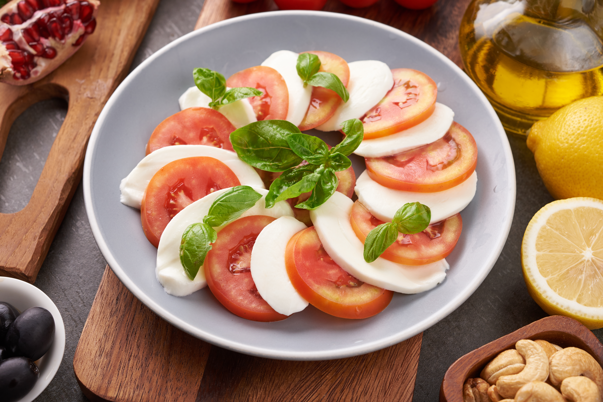

Home
Caprese salad recipe

The Caprese salad is a staple of Italian cuisine, designed to highlight the colors of the Italian flag: red, white, and green. It is an incredibly easy "no-cook" dish that relies entirely on the quality of its fresh ingredients.
Ingredients:
- 1 thick slice of sourdough or multigrain bread
- 1/2 ripe avocado
- 1 teaspoon extra virgin olive oil
- A pinch of sea salt and cracked black pepper
- Optional: Red pepper flakes or microgreens for garnish
Steps
- Toast the Bread: Place your slice of bread in a toaster or under a broiler until it is golden brown and crisp.
- Prepare the Avocado: In a small bowl, scoop out the avocado flesh and mash it with a fork until it reaches your desired consistency.
- Spread and Season: Spread the mashed avocado evenly over the warm toast.
- Add Finishers: Drizzle with olive oil and sprinkle with salt, pepper, and any optional toppings.